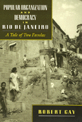

<body bgcolor="#FFFFFF" text="#000000" link="#0000FF" vlink="#CC0000" alink="#CC0000"><center><hr width="350" size="1" align="center" noshade>Two political survival strategies in Brazilian slum neighborhoods<hr width="350" size="1" align="center" noshade><p><a href="https://cdcshoppingcart.uchicago.edu/Cart/ChicagoBook.aspx?ISBN=9781566391191&&PRESS=temple" target="_top">Buy this book!</a> | <a href="https://cdcshoppingcart.uchicago.edu/Cart/Cart.aspx?PRESS=temple" target="_top">View Cart</a> | <a href="https://cdcshoppingcart.uchicago.edu/Cart/Cart.aspx?PRESS=temple" target="_top">Check Out</a></p><p></p></center><!--none//--><h1>Popular Organization and Democracy in Rio De Janeiro</h1>
<H2>A Tale of Two Favelas</H2>
<h3>Robert Gay</h3>
<P>cloth 1-56639-119-9 $79.50, Dec 93, <FONT COLOR=#990033>Out of Stock Unavailable</FONT>
<br>paper 1-56639-120-2 $36.95, Dec 93, <FONT COLOR=#990033>Available</FONT>
<br>Electronic Book 1-43990-346-8 $36.95 <FONT COLOR=#990033>Out of Stock Unavailable</FONT>
<BR> 208 pp
5.5x8.25
15&nbsp;tables 3&nbsp;figures
</P><BLOCKQUOTE><I>"Robert Gay's study is well done. It provides a detailed look at two different forms of popular political organization in Brazil and how they relate to the state, local people, parties, and politicians.... Gay allows the reader to catch a glimpse of the enormous varieties of ways in which popular organizations relate politics to contemporary Brazil. There is no comparable book on Latin American politics."</I>
<br>&#151<b>Scott Mainwaring</b>, Helen Kellogg Institute for International Studies, University of Notre Dame<I></I></BLOCKQUOTE>
<p>This urban tale of survival illustrates two versions of active, organized, aggressive participation in the political process.
<p>Vila Brasil survives by exchanging votes for favors. The president of its neighborhood association promises political candidates that the favela will vote in masse for the highest bidder. Vila Brasil has maneuvered this power to become one of the best served favelas in the region&#151for the moment, at least.
<p>Vidigal, on the other hand, steadfastly refuses to support candidates who campaign on boasts or promises alone. Vote-selling, or buying, is not permitted. To do well in Vidigal, a politician must talk not only about providing electricity and water in the favela, but also about wages, education, and health care over the longer term.
<p>In analyzing the favela's different responses to the popular movement that confronted the military in Rio de Janeiro in the late 1970s and early 1980s, the author makes a significant contribution to literature about relationships among urban poor, political elites, and the state.
<BR>&nbsp;<h2>Excerpt</h2><P>Excerpt available at <a href="http://www.temple.edu/tempress">www.temple.edu/tempress</a></p>
<BR>&nbsp;<h2>Contents</h2><P>
<p>Photographs
<br>Maps and Tables
<br>Acknowledgments
<br>Introduction
<br>1. The Politics of Urban Survival
<br>2. Raising the Stakes: Neighborhood Politics in Vila Brasil
<br>3. Reshaping Political Space: Neighborhood Politics in Vidigal
<br>4. The Coming of Elections
<br>5. Turning Our the Vote
<br>Conclusion
<br>Appendix: Methodology
<br>Notes
<br>Bibliography
<br>Index
</P><BR>&nbsp;<H2>About the Author(s)</H2>
<P><b>Robert Gay</b> is Professor of Sociology at Connecticut College.</P>
<BR><H2>Subject Categories</H2>
<p><A HREF="/tempress/latin.html" TARGET="_top">Latin American/Caribbean Studies</a>
<BR><A HREF="/tempress/sociology.html" TARGET="_top">Sociology</a>
</p>
<p align="center"><a href="https://cdcshoppingcart.uchicago.edu/Cart/ChicagoBook.aspx?ISBN=9781566391191&&PRESS=temple" target="_top">Buy this book!</a> | <a href="https://cdcshoppingcart.uchicago.edu/Cart/Cart.aspx?PRESS=temple" target="_top">View Cart</a> | <a href="https://cdcshoppingcart.uchicago.edu/Cart/Cart.aspx?PRESS=temple" target="_top">Check Out</a></p><p><font face="Arial" size="1"><a href="copyright.html" onMouseOver="window.status='Web Copyright Policy';return true;" onMouseOut="window.status=''" title="Web Copyright Policy">&copy;</a> 2015 <a href="http://www.temple.edu" target="new" onMouseOver="window.status='Link to Temple University home page';return true;" onMouseOut="window.status=''" title="Link to Temple University home page">Temple University</a>. All Rights Reserved. http://www.temple.edu/tempress/titles/1126_reg.html</font></p>